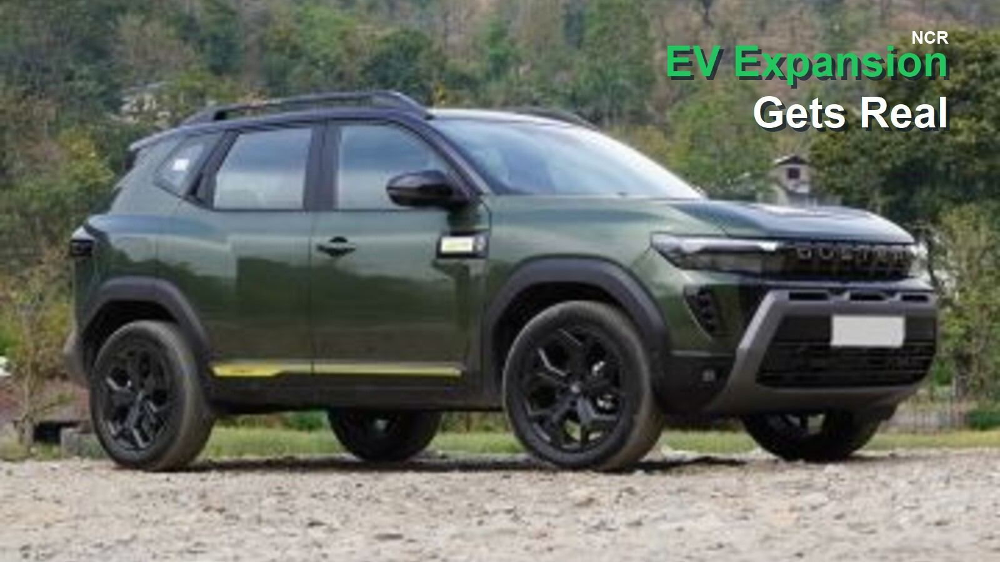

Renault Duster Scores 5-Star BNCAP, Tesla Launches 6-Seater Model Y L, and Maruti Readies Four New Cars: Week in Review

The past week in the Indian automotive market was packed with high-impact developments: Renault's Duster became the latest SUV to earn a five-star Bharat NCAP safety rating, Tesla introduced a six-seater Model Y L varian
The past week in the Indian automotive market was packed with high-impact developments: Renault's Duster became the latest SUV to earn a five-star Bharat NCAP safety rating, Tesla introduced a six-seater Model Y L variant, Mercedes-Benz launched its entry-level CLA Electric sedan, and Maruti Suzuki outlined plans for four new models over the next 12–18 months. Meanwhile, JSW Motors announced its retail strategy ahead of its debut car launch, and Honda confirmed it will exit the South Korean car market by end of 2026. Here's a detailed breakdown of what these stories mean for car buyers and the industry.
Renault Duster Achieves 5-Star BNCAP Safety Rating
Renault's popular compact SUV, the Duster, has been tested under India's Bharat NCAP (BNCAP) crash test protocol and scored a full five-star rating for adult occupant protection. This is the first Renault model to undergo BNCAP evaluation, placing the Duster among the safest vehicles in its segment. The test results underscore Renault's commitment to safety in the Indian market, where BNCAP ratings are increasingly influencing purchase decisions. The Duster's performance is expected to boost buyer confidence, especially among families prioritizing safety.
Tesla Model Y L: Six-Seater Electric SUV with Extended Range
Tesla has launched the Model Y L in India, a longer-wheelbase version of the popular Model Y that accommodates three rows of seats in a 2+2+2 layout. The Model Y L features a dual-motor all-wheel-drive system and a claimed range of over 500 km on a single charge. This variant targets buyers who need extra passenger capacity without switching to a larger, less efficient SUV. The launch expands Tesla's Indian lineup and competes directly with other electric three-row SUVs expected in the market.
Mercedes-Benz CLA Electric: Entry-Level EV Sedan Arrives
Mercedes-Benz has introduced the CLA Electric, its most affordable electric sedan in India. The CLA Electric is offered in a single 250 Plus variant with a rear-wheel-drive setup and a claimed driving range of over 750 km. This model marks Mercedes' push to attract premium EV buyers who desire luxury and long range. The CLA Electric's competitive pricing and range could challenge other luxury electric sedans and widen EV adoption in the upper segment.
Maruti Suzuki's Four-Car Launch Blitz by 2027
Maruti Suzuki is preparing for one of its busiest launch periods in recent years. Over the next 12 to 18 months, the company will introduce four new models: a Brezza facelift, the YMC electric SUV, and updated versions of the Fronx and Baleno. The Brezza facelift is expected to feature a larger 10.1-inch touchscreen (up from 9 inches) and enhanced connected car technology. The YMC EV, slated for late 2026 or early 2027, will offer two battery pack options. These launches signal Maruti's strategy to refresh its mass-market lineup and strengthen its electric vehicle portfolio.
JSW Motors Plans Experience Centres Ahead of Debut
JSW Motors, the automotive arm of the JSW Group, has announced plans to set up at least four 'experience centres' in key Indian cities—Mumbai, New Delhi, and Ahmedabad—before launching its first car in the second half of 2026. The experience centres will allow potential buyers to interact with the brand and its products before the official sales rollout. This approach mirrors the direct-to-consumer retail models adopted by new-age EV startups and indicates JSW's ambition to carve a niche in India's competitive car market.
Honda to Exit South Korea Car Market; India Operations Unaffected
Honda has confirmed it will cease car sales in South Korea by the end of 2026, though it will continue after-sales service and focus on its motorcycle business there. The decision is driven by low sales volumes and market challenges. Importantly, Honda's Indian operations remain unaffected, and the company continues to invest in its India lineup, including the recently updated City and Elevate. The South Korea exit is a strategic realignment rather than a sign of broader retreat.
What This Means for Car Buyers
For Indian consumers, the week's news offers several takeaways:
- Safety is becoming a key differentiator: The Duster's five-star BNCAP rating adds to the growing list of safe SUVs. Buyers should prioritize BNCAP-tested models when shopping.
- More EV choices with longer range: Tesla's Model Y L and Mercedes CLA Electric provide compelling options for those seeking electric mobility with ample range and seating flexibility.
- Maruti's lineup refresh: Upcoming updates to popular models like Brezza, Fronx, and Baleno promise better technology and features, making them even more value-for-money.
- New entrants bring new retail experiences: JSW Motors' experience centres could redefine how buyers interact with car brands, offering a more immersive pre-purchase experience.
Industry Implications
The developments highlight several trends: safety regulations (BNCAP) are reshaping product priorities; electric vehicle competition is intensifying across segments; and legacy automakers like Maruti are accelerating their EV transition. Meanwhile, Honda's exit from South Korea underscores the challenges of operating in mature markets with strong local players. For India, the influx of new models and brands signals a dynamic period ahead, with consumers benefiting from more choice and better technology.
Future Outlook
Expect more BNCAP ratings to influence marketing strategies, especially for SUVs. Tesla may expand its Model Y L deliveries to other markets. Maruti's YMC EV will be closely watched as a test of mass-market EV adoption. JSW Motors' debut product will reveal whether the group can replicate its industrial success in automotive. Overall, the next 18 months promise to be transformative for India's car market.
Conclusion
From Renault's safety milestone to Tesla's six-seater EV and Maruti's product blitz, the past week showcased the breadth of innovation and competition in India's automotive sector. Buyers have more reasons than ever to consider safety ratings, electric options, and upcoming models. Stay tuned for more updates as these stories develop.
Frequently Asked Questions
1. What is the BNCAP rating of the Renault Duster?
The Renault Duster scored a full five-star rating for adult occupant protection in Bharat NCAP tests.
2. How many seats does the Tesla Model Y L have?
The Tesla Model Y L offers three-row seating in a 2+2+2 layout, accommodating six passengers.
3. What is the range of the Mercedes-Benz CLA Electric?
The CLA Electric 250 Plus variant claims a driving range of over 750 km on a single charge.
4. Which new cars is Maruti Suzuki launching?
Maruti Suzuki plans to launch a Brezza facelift, YMC EV, and updated Fronx and Baleno models by 2027.
5. Will Honda's exit from South Korea affect India?
No, Honda's Indian operations remain unaffected; the company continues to sell and service cars in India.
For more on car buying, check our car buying guide and latest launch coverage.
Sources checked
Related Reading
For more context, compare this story with Renault Duster Scores 5-Star BNCAP, Tesla Model Y L Launches, Maruti Readies 4 New Cars: Week in Review and Renault Duster BNCAP 5-Star, Tesla Model Y L 6-Seater, Maruti's 4-Car Blitz: Week's Biggest Car News and Renault Duster Scores 5-Star BNCAP, Tesla Launches 6-Seater Model Y L: Week's Biggest Car News and Renault Duster BNCAP 5-Star, Tesla Model Y L 6-Seater, Maruti’s 4-Car Blitz: Week’s Biggest Car News.